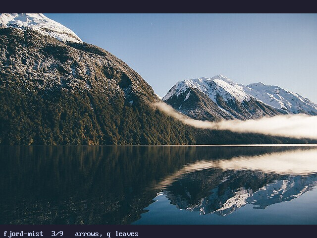
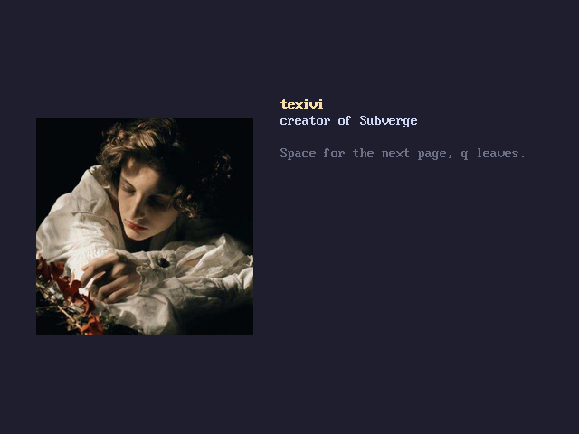
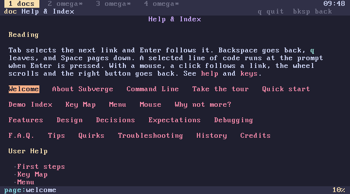
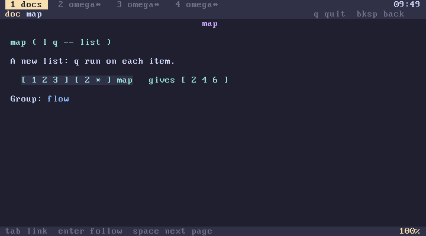
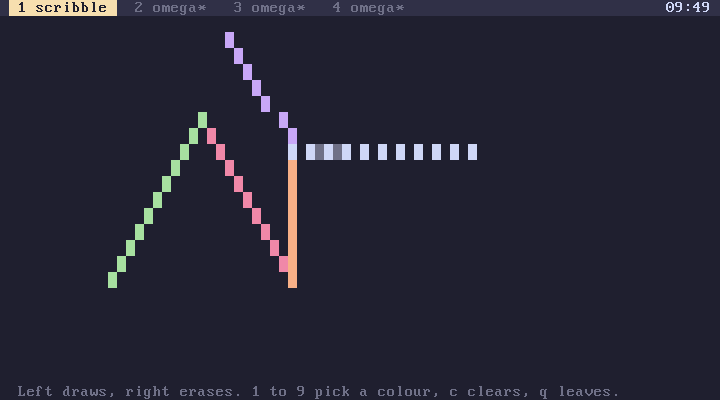
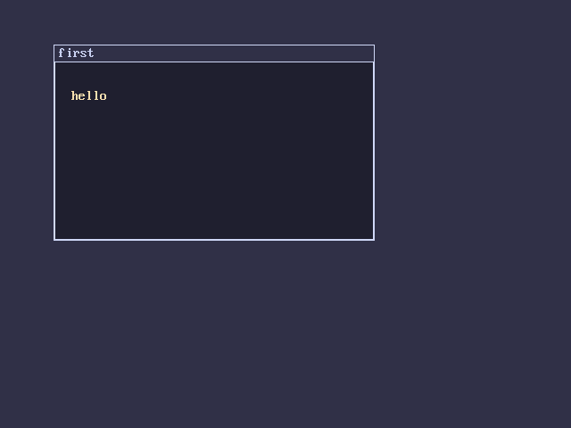
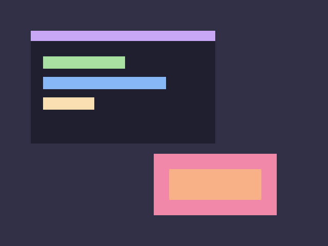
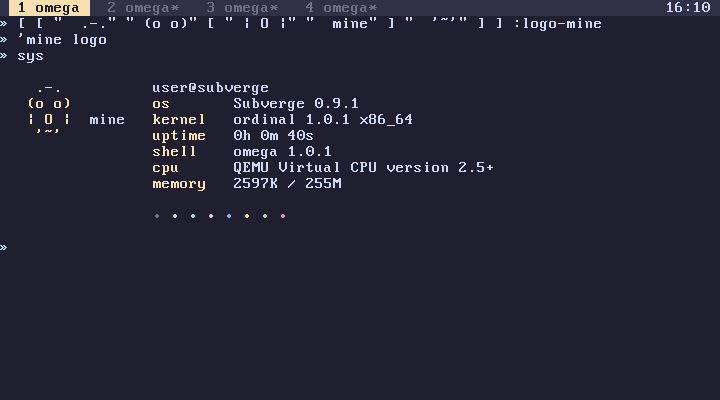

subverge
subvergeWhat's new
- Subverge 0.9.5
- Pictures
- Bitmaps
- Credits
- Fixes
- Subverge 0.9.4
- Help pages
- The mouse
- Infinity
- Subverge 0.9.3
- Text and windows in graphics mode
- Subverge 0.9.2
- beep
- Graphics mode
- Subverge 0.9.1
- The haelide theme
- Logos
- type
- fail
- Fixes
- Upgrading from 0.9.0
Subverge 0.9.5
Subverge 0.9.5 comes with ordinal 1.0.5 and omega 1.0.5. Get it from the releases page.
Pictures
The kernel has a JPEG decoder and nine pictures built in. gallery shows them one at a time, with the arrows to move and q to leave:
gallery

Graphics mode is 24-bit colour now, so a photograph is drawn as it is and not cut down to a palette. The words that draw with the sixteen theme colours, dot, box, window and text, work as before. See pictures.
Bitmaps
A program can make its own pictures. bitmap makes a pixel grid, bmp-set, bmp-fill and bmp-box change it and bmp-show draws it:
gfx
200 100 bitmap { b }
b 0x102030 bmp-fill
b 10 10 180 80 0xFFC040 bmp-box
b 20 20 bmp-show
key drop gfx-off
picture decodes a built-in picture into a bitmap, so one can be drawn on and shown again.
Credits
credits shows texivi, gretagen and Vsauce on three pages, and Space goes to the next:
credits

Fixes
- A PS/2 mouse packet with the overflow bit set is dropped and no longer moves the pointer far away.
installworks again with the help pages linked in. The pages had made the kernel's data too large to copy.- The installed boot stage loads a kernel of any size that fits its slot. It stopped at 576 KiB before.
Subverge 0.9.4
Subverge 0.9.4 comes with ordinal 1.0.4 and omega 1.0.4. Get it from the releases page.
Help pages
The help pages are inside the system now. docs opens the index and "name" doc opens one page:
docs
"first-steps" doc

Tab selects the next link, Enter follows it, Backspace goes back and q leaves. A line of code in a page can be selected and run: Enter closes the viewer and runs the line at the prompt. Every word has a page with its stack effect and an example, reached from a link in a page or from the index of words.

The pages are the ones in this documentation, among them keys, cmdline, aleph-null and quirks. See help.
The mouse
A PS/2 mouse works on the text screen. The pointer is one inverted cell. A click on a tab title in the top bar switches tab, and in the help pages a click follows a link, the wheel scrolls and the right button goes back. mouse leaves the pointer cell and the buttons, and mouse? is 1 when a mouse was found:
mouse? .
mouse . . .
scribble draws with the mouse: the left button draws, the right button erases, 1 to 9 pick a colour and q leaves.

See mouse and ps2. QEMU gives the mouse to the guest after the first click in its window, and Ctrl-Alt-G takes it back.
Infinity
hotel shows Hilbert's hotel, rationals lists the positive fractions, and ulam marks the primes on a square spiral. pair and unpair number the pairs of naturals, rational gives the n-th positive fraction, fusc, collatz, thue and prime? are small helpers:
3 4 pair . 32 unpair . .
7 rational . .
27 collatz .
learn has new lessons for them, and new pages explain the ideas: aleph-null, countable sets, the hotel and uncountable sets. See demos.
Subverge 0.9.3
Subverge 0.9.3 comes with ordinal 1.0.3 and omega 1.0.3. Get it from the releases page.
Text and windows in graphics mode
text now draws in graphics mode, using the same arguments as in the text screen. The new window word draws a frame with a title bar:
gfx 40 40 300 160 "first" window "hello" 60 90 14 text key drop gfx-off

window takes x y w h title --. See screen.
Subverge 0.9.2
Subverge 0.9.2 comes with ordinal 1.0.2 and omega 1.0.2. Get it from the releases page.
beep
beep plays a tone on the PC speaker. It takes a pitch in hertz and a length in ticks:
440 50 beep
440 50 beep plays an A for half a second. The pitch has to be between 20 and 20000. Ctrl-C stops the tone. QEMU plays it when started with an audio backend that supports the speaker, for example -audiodev pa,id=a -machine pcspk-audiodev=a. See ports.
Graphics mode
gfx switches to 640 by 480 graphics with the sixteen colours of the current theme. dot sets a pixel and box fills a rectangle, and gfx-off goes back to the text screen:
gfx 20 20 100 60 5 box key drop gfx-off

The picture is made of eight box calls, listed in screen.
F1 to F4 also leave graphics mode. It needs QEMU's default -vga std display. This is the first step toward the planned desktop with windows. See screen.
Subverge 0.9.1
Subverge 0.9.1 comes with ordinal 1.0.1 and omega 1.0.1. Get it from the releases page.
The haelide theme
'haelide theme

haelide also switches sys to the haelide logo. See themes.
Logos
sys can draw other logos. logos lists them, 'haelide logo switches, and logo@ gives the current name. A logo is a word named logo- and the logo's name, so you can draw your own:
[ [ " .-." " (o o)" [ " | O |" " mine" ] " '~'" ] ] :logo-mine
'mine logo

An installed system remembers the logo across reboots. See logos.
type
type names the kind of a value:
[ 1 ] type say list
5 type say number
"x" type say string
'x type say symbol
fail
fail fails the line with your own message, the same way a built-in word fails:
[ { n } n 0 < [ "negative" fail ] when n sqrt ] :root-of
-4 root-of
! negative
Inside try it is caught like any other error (catching).
Fixes
- Ordinal arithmetic whose coefficient would pass 64 bits, such as
omega 4294967296 * 4294967296 *, gave a wrong result. It now fails withthat coefficient doesn't fit in 64 bits.
Upgrading from 0.9.0
The disk layout is the same as in 0.9.0, with the logo name added to the state header. A root saved by 0.9.0 still has the old sys, which doesn't know about logos. See upgrading an installed disk.